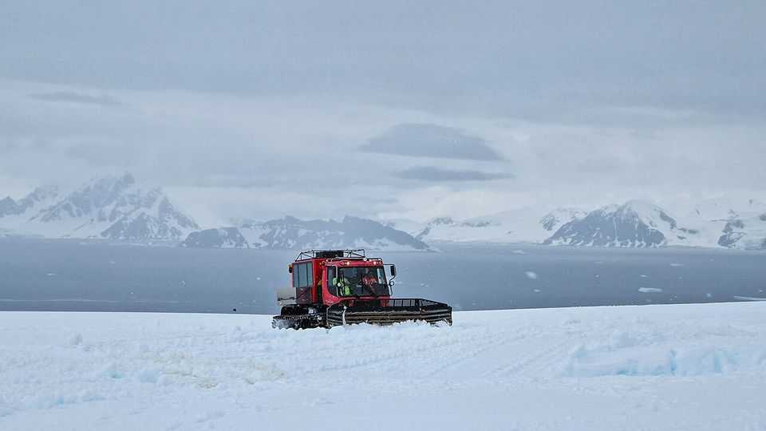

How to study Antarctic ice without blowing it up
The sound of giant tractors may replace dynamite

Aug 20th 2026
THE PISTENBULLY 300 Polar Antarctic vehicle is a 8.5-tonne heavy-duty specialised monster built to withstand extreme polar conditions. It features wide tracks, massive pulling strength, powerful cranes and multi-purpose tools designed for the toughest ice and snow operations. No Antarctic base should be without one. Research led by Liu Guofeng at China University of Geosciences in Beijing, however, suggests the PistenBully may be capable of more than just fetching and carrying. As Dr Liu writes in the Journal of Glaciology, it is also able to do actual science.
Antarctica’s ice sheet is the largest reservoir of freshwater on Earth, but it is shrinking. Just above the ice proper, but below the surface snow, is a transition zone 50-100 metres thick called the firn layer. This is where snow is compressed into ice. It is also where meltwater from above is captured in pores and refrozen. Knowing the firn layer’s exact thickness and understanding how it behaves is crucial to predicting what will happen, over the long term, to the ice sheet and thus to the world’s sea levels. Visualising this subsurface melange is difficult, though.
Current practice, borrowed from oil- and gas-prospecting, is to use an “active source”. This is geologist-speak for dropping a stick of dynamite down a drill hole and listening to the explosion’s sound, propagated through the rock—or, in this case, ice. The listening is done by sensors called geophones. Since sound travels at different speeds through water, ice and snow, a computer analysis of when and how powerfully the echoes arrive at different geophones permits construction of a high-resolution image of the firn layer.
This works, but is not ideal. First, someone has to drill the hole down which to drop the dynamite. That is not always possible in polar conditions. Then, the explosive must be purchased, brought to Antarctica and the actual dropping carried out. Moreover, detonating dynamite in sensitive environments is not to be done lightly. An alternative source of sound would thus be good. And, after hearing the din created by a convoy of PistenBullys, Dr Liu thought they might be the very thing.
To this end, he and his colleagues experimented with geophones already in place in the Larsemann Hills of East Antarctica. They commandeered some PistenBullys and arranged for them to be driven around the hills. They found that if the vehicles were sent along both sides of a line of geophones, parallel with the sensors, they got the effect they were after.
Since the Larsemann Hills’ firn had already been mapped the old-fashioned way, Dr Liu was able to compare his machine-created images with those obtained using dynamite. They were pretty much identical. He thus seems to have devised a way of mapping the firn’s structure that is simpler than blowing it up, but equally good. ■